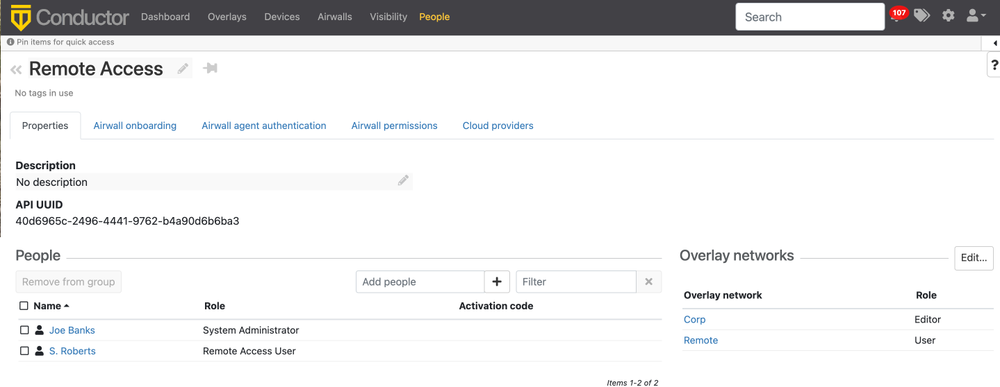
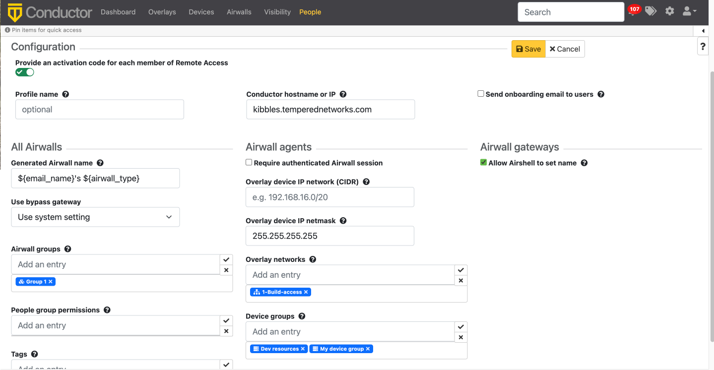

Set up a People Group
Set up a people group to make it easier to manage the people accessing your secure network.
Using a People Group, you can configure the User onboarding options, including Profile name, Conductor, and Airwall Gateways and resources these people have access to.
Note: If you are combining people groups with a third party authentication service such
as LDAP or OIDC, you manage permissions in that service with group
membership.
What you can do with People groups:
- Manage trust – You can assign trust dynamically to a people group using tags and a smart device group, or use the tag applied to Airwall Agents and Servers used by people in the group to easily find devices to add to a device group directly.
- Onboard users – You can use the User onboarding tab to send Airwall Invitations to people in the group and as they are added to the group. (You can also send invitations from the Airwalls page to the people currently in the people group).
- Set Overlay network permissions – Use the people to set overlay network editors and viewers.
- Set groups to get alerts – Send event monitor alerts to a people group.
- Manage groups coming in from a third-party OIDC authentication provider – Create people groups in the Conductor that exactly match the groups on your authentication provider to automatically add members of the group in the authentication provider to the group in the Conductor.
- In Conductor, go to People>People groups.
- Select New People Group.
-
Set a name for this people group and add a description or tags, if desired.
Setting up a group for Third-party authentication: If you are managing people groups with a third-party authentication service, make sure the people group name matches your group on that service. Then, when you add people on that service, they are included in the people group when they log in.
- Select Create.
- If you are using a Third-party Authentication service, skip the rest of this procedure. On the People groups page, open the People group you just created.
-
Under People, select Add people
and select the people you want to be a member of this group.

- If you are using this group to onboard users, open the Airwall onboarding tab.
-
Next to Configuration, select the pencil icon
 to
edit.
to
edit.
-
Check Provide an activation code for each member of
<groupname>, and then set up how to onboard the users added
to this group:

- Control access – If you want to grant or block access for this group at particular times, go to the Airwall agent authentication tab and set up Access windows for the group. For more details, see Set Times Authenticated Users can Access the Secure Network:
-
Manage trust with tags – If you want to manage trust for the people
group using tags, go to the Airwall agent authentication
tab and under Authentication tags, enter the tags you
want to use to manage trust.
Note: These tags are applied to the Airwall Agent or Server when people in this group log in to authenticate their session. Tags are removed when the remote session ends. Combined with smart device groups, you can use these tags to dynamically create trust.
- Manage Airwall permissions – If you want to set what Airwall Edge Services this group has access to, go to the Airwall permissions tab, and add any you want them to have edit permissions to.
- Manage Cloud permissions – If you want to give permissions to create cloud Airwall Gateways to this group, go to the Cloud providers tab, and add any cloud providers that you want them to have edit permissions to.